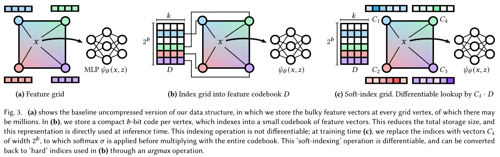
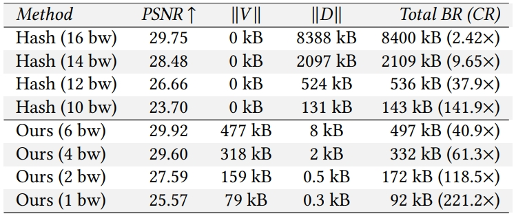
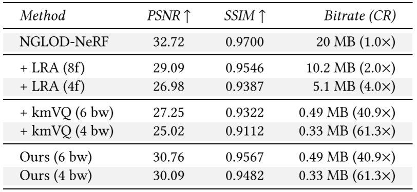
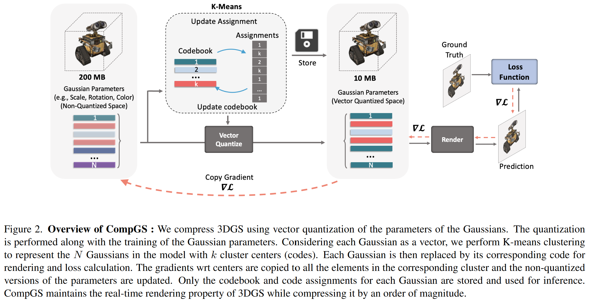
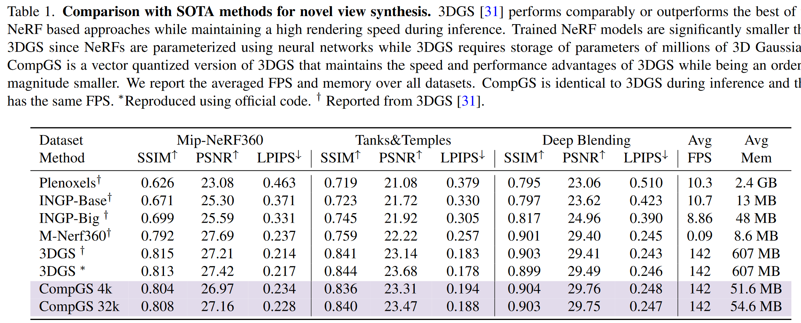
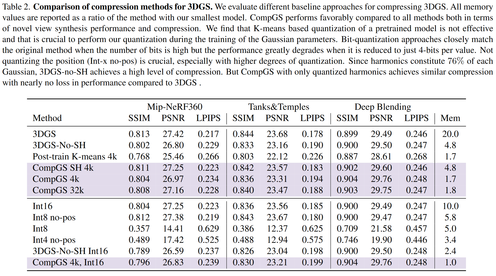

可微矢量量化
前置知识：《一些常见的模型量化方法》
# (SIGGRAPH'22) Variable Bitrate Neural Fields (Vector-Quantized Auto-Decoder, VQ-AD): 用于Feature Grid压缩的矢量量化思想

这论文把矢量量化的思想用到Feature Grid的训练和存储中，从而压缩模型的大小。 具体来说，本文的方法是把InstantNGP中使用空间hash函数查表的方法改成了一个可训练的indices。
前置知识：InstantNGP
在InstantNGP中，hash表的values可以视为矢量量化中的码矢，训练过程实际上就是在对这个码矢进行训练。 照这个思路，InstantNGP中codebook的key就是由空间hash函数生成的值。 但是，矢量量化的一个很重要的思想就是要对输入向量进行聚类，保证输入向量和其对应的码矢尽可能接近，而InstantNGP中feature值相近的region（内容相似的区域）经过空间hash出来的值随机均匀分布在指定范围内，于是相近的输入向量并不一定会对应到同一个码矢。
所以这样其实并不符合矢量量化的思想，矢量量化通常用聚类等方法让输入向量和其对应的码矢尽可能接近，在InstantNGP的场景就是内容相似的区域对应到同一个码矢。 本文就是要解决这个问题。
| 符号 | 含义 |
|---|---|
| D∈R2b×k | 存储2b个k维feature的codebook |
| m | 空间等分为grid，grid每个顶点都对应一个feature，feature数量共m个 |
| V∈Zm，取值范围[0,2b−1] | grid的m个顶点对应的feature在codebook中的位置 |
| C∈Rm×2b | softened indices矩阵，grid的m个顶点都能从其中查出一个2b维向量 |
# 训练过程中的forward
- （同InstantNGP）对于每个输入坐标，计算其在grid里的那个cube中，算出cube的8个顶点编号
- 对于每个顶点，在C中查出2b维向量，经过一个softmax激活函数
- 把这个2b维向量与D中的2b个k维feature依次相乘后求和，作为这个顶点的feature
- （同InstantNGP）插值、过MLP、渲染
这样，用可训练的softened indices矩阵C代替没法训练的hash函数indices，间接达到聚类的效果。
# 训练结束后的数据转换
softened indices矩阵C很大，显然不能直接存它，但是在前面训练的时候让它经过一个softmax激活函数就是为了让它里面的值变成one-hot的，于是直接V=argmaxiC[i]就把它转化为了一个m个b bit整数的index表。
# 推断时的forward
- （同InstantNGP）对于每个输入坐标，计算其在grid里的那个cube中，算出cube的8个顶点编号
- 对于每个顶点，在V中查出b bit整数即其feature在feature表中D的位置
- 根据这个位置从D中找出这个顶点的feature
- （同InstantNGP）插值、过MLP、渲染
# 压缩效果
# 对比InstantNGP
原文中的描述：
In contrast to using a hash function [Müller et al. 2022] for indexing, we need to store 𝑏-bit integers in the feature grid but we are able to use a much smaller codebook (table) due to the learned adaptivity of the indices.
比InstantNGP多存m个b bit整数，空间划分越细m越大。
这种方法用可训练的softened indices间接达到聚类的效果，所以同样的codebook长度其质量要比用空间hash的InstantNGP更好。

实验结果可以看出，VQ-AD主要的存储占用都是那m个b bit整数，反倒是codebook成了大头，不过整体上还是VQ-AD更小。
bw表示bitwidth，比如10bw表示codebook D的长度是210。 根据这里的VQ-AD在6bw时V大小可以算出其将空间划分方式和feature的长度：
- 477kB/6bit=651264，所以空间中共有651264个grid顶点
- 8kB/26=128B，论文前面说了特征值是fp16，所以每个feature由64个浮点数组成
1bw的时候codebook应该只有两个feature，这样都能比InstantNGP效果好？
# 对比其他压缩方法
对比的其他压缩方法都是在模型训练完进行后处理
- LRA: low-rank approximation 低秩估计，具体是用的Karhunen-Loeve Transform（其实就是PCA），即对codebook进行特征值分解，保留较大的特征值
- kmVQ: 对codebook进行K-means矢量量化

总之就是VQ-AD效果最好
# Compact3D: Compressing Gaussian Splat Radiance Field Models with Vector Quantization: 用于压缩3D Gaussian Splatting的矢量量化和量化感知训练

主要是对高斯点的参数进行K-means量化，并且提出了对应的量化感知训练方法。
被量化的高斯点参数包括四种：颜色、球谐系数、scale、rotation，每种的量化都独立进行，有各自的codebook。
没被量化的高斯点参数是位置和透明度。显然位置被矢量量化了会导致高斯点重合，没有意义；透明度是个标量值不需要矢量量化。
# 量化过程
K-means矢量量化直接拿来用
# 量化感知训练过程
forward pass: 和通常的量化感知一样，具体如下：
- 高精度参数（高斯点参数）->量化->反量化->得到低精度参数（码矢）->推断->得到梯度
backward pass: 通常的量化感知训练是用反向传播梯度更新高精度参数上，再通过量化操作重新生成低精度参数，但是本文的低精度参数是K-means生成的，每次反向传播都进行一次K-means量化生成低精度参数显然不现实，所以作者每100轮才进行一次K-means量化生成codebook，具体如下：
- 用反向传播梯度同时更新高精度参数和低精度参数
- 低精度参数的梯度等于所有用了这个码矢的参数梯度之和
- 每个高精度参数都有一个梯度，每个码矢的梯度对应多个高精度参数，所以有多个梯度
- 用低精度参数的梯度更新高精度参数
- 低精度参数的梯度等于所有用了这个码矢的参数梯度之和
- 每100轮重新进行K-means量化生成codebook
这个操作相当于对整个编码区域中的点进行平移，这样，位于编码区域边缘的点就会在下一次K-means量化中被聚类到别的区域里
# 效果
虽然还是很大，但是已经压了很多了，在某些数据集上甚至比没有向量量化的原版3DGS还高那么一丢丢：

消融实验总之就是我最好：
